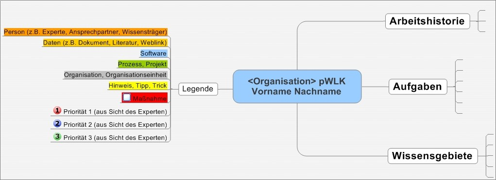

lernOS Expert Debriefing
Wissen von Expert*innen nachhaltig bewahren
von Simon Dückert und der lernOS Community
Expert Debriefing
Das Expert Debriefing ist eine Methode zum Wissenstransfer von Experten auf ein oder mehrere Nachfolger (z.B. bei Ruhestand, Abteilungswechsel, Kündigung, Sabattical, Elternzeit, Job Rotation).
Im Zuge des Demografischen Wandels und dem Wandel zur Wissensgesellschaft bekommt der Faktor der Minimierung des Wissensverlustrisikos eine immer stärkere Bedeutung.
Expert Debriefing Geschichte
- 1990er: EWITA-Wissenstransfer-Projekte bei Audi
- 2002: Erste Multiplikatoren-Schulungen bei VW (Wissensstafette)
- 2005: Expert Debriefing Einführung bei Schaeffler als Teil des Wissensmanagement-Portfolios
- Ab 2007: Offenes Schulungsangebot von Cogneon für Moderatoren
- 2018: Expert Debriefing wird Teil von lernOS
Warum Expert Debriefing?
- Wissensgesellschaft - Wissen macht den Unterschied
- Demografischer Wandel – wenn Erfahrung in Rente geht
- Fachkräftemangel – wenn immer weniger immer mehr machen müssen
- Fluktuation – neue Jobrealitäten
Rollen im Expert Debriefing

Expert Debriefing Referenzprozess

Persönliche Wissenslandkarte
Maßnahmen der Wissensbewahrung

Expert Debriefing Erfolgsfaktoren
- Die Teilnahme am Expert Debriefing ist freiwillig
- Vorgesetzte stehen hinter dem Prozess, lassen aber Freiräume zu
- Transparenz schaffen und Erwartungshaltungen der Beteiligten abholen
- Den Prozess professionell und auf Augenhöhe moderieren
- Den Experten durch Wertschätzung motivieren
- Den Prozess durch den Moderator strukturieren und kontrollieren
Stop talking, start doing!
- Folge @lern_os auf Twitter
- Melde dich zum lernOS Newsletter KCLO an
- Werde Teil der lernOS Community
- Suche/biete Circles im lernOS CircleFinder